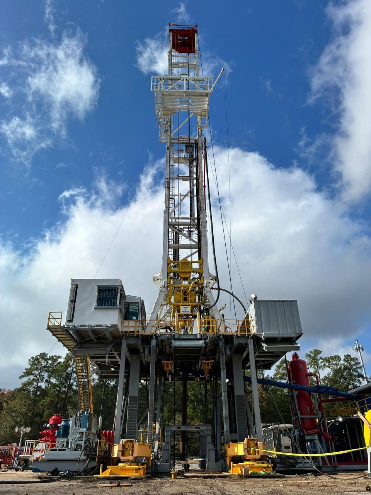

RINCONCD67CONSULTING & SUPPLY LLCCONSULTING & SUPPLY LLC
RINCONCD67CONSULTING & SUPPLY LLCCONSULTING & SUPPLY LLC
Drilling rigs and well servicesTaladros y servicios a pozos
Land drilling and workover rigs, coiled tubing, cementing and nitrogen units from qualified fleet owners.Taladros de perforación y reacondicionamiento, unidades de coiled tubing, cementación y nitrógeno de flotas calificadas.
Photo: Valiant, supplier catalogueFoto: Valiant, catálogo del proveedor